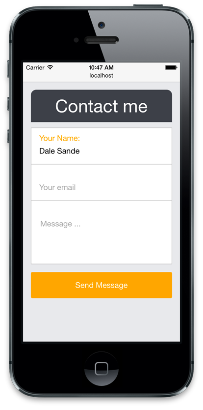

Создание демонстрационной формы
В этой демонстрации мы создадим популярный образец интерфейса, в котором пользователь вводит данные в форму.

Настройка
Установите libsass с Grunt Sass и добавьте Bourbon. Node-Sass установлен как зависимость от Grunt-Sass.
$ npm install grunt-sass --save
$ npm install node-bourbon --saveДобавьте файл bower.json
{
"name": "class-demo",
}Добавьте некоторые пакеты Bower.
$ bower install color-scale --save
$ bower install type-rhythm-scale --save
$ bower install rwd-toolkit --saveУстановите Grunt
npm install grunt --saveУстановите grunt-watch
npm install grunt-contrib-watch --save-devДобавьте gruntfile.js.
module.exports = function(grunt) {
grunt.initConfig({
sass: {
dist: {
files: {
'public/stylesheets/application.css': 'sass/application.scss'
},
options: {
sourceMap: true,
includePaths: [
require('node-bourbon').includePaths,
'./bower_components/color-scale',
'./bower_components/type-rhythm-scale',
'./bower_components/rwd-toolkit'
]
}
}
},
watch: {
source: {
files: ['sass/**/*.scss', 'views/**/*.jade'],
tasks: ['sass'],
options: {
livereload: true, // требуется для запуска LiveReload
}
}
}
});
grunt.loadNpmTasks('grunt-contrib-watch');
grunt.loadNpmTasks('grunt-sass');
grunt.registerTask('default', ['sass']);
};Создайте новый Sass-файл
Создайте следующую папку и файл, а затем добавьте небольшой код Sass в файл.
$ mkdir sass
$ touch sass/application.scssУстановите зависимые библиотеки. Добавьте это в application.scss, чтобы Sass был в курсе об этих зависимостях.
@import "bourbon";
@import "type-rhythm-scale";
@import "rwd-toolkit";Запустите Grunt
$ grunt
$ grunt watchКонтроль версий
Создайте файл .gitignore и добавьте в него следующее:
# Файлы, созданные ОС
####################
.DS_Store
.DS_Store?
._*
.Spotlight-V100
.Trashes
ehthumbs.db
Thumbs.db
# Выходной CSS
#######################
public/stylesheets/*.css
public/stylesheets/*.css.map
# Зависимые пакеты
######################
node_modules/
bower_componentsДобавьте в управление версиями:
$ git add --all
$ git commit -m "add all the things"Макет
Обновите layout.jade для использования application.css:
link(rel='stylesheet', href='/stylesheets/application.css')Добавьте в LiveReload:
script(src="//localhost:35729/livereload.js")Обновите браузер, а затем внесите небольшие правки в Sass и Jade-файлы и убедитесь, что LiveReload работает.
Представление
Начнём с макета и добавим в него больше материала, чтобы заставить его работать правильно.
meta(charset='utf-8')
meta(http-equiv='X-UA-Compatible', content='IE=edge')
meta(name='description', content='#{description}')
meta(name='viewport', content='width=device-width, initial-scale=1.0, minimum-scale=0.5 maximum-scale=1.0 minimal-ui')Обновите файл index.js в ./routes.
res.render('index', { title: 'Contact me', description: 'This is a new demo' });Откройте ./views/index.jade и добавьте следующее:
section.message-container
h1.title= title
form#form.form(action='#', method='get')
ul
li
label(for='name') Your Name:
input#name(type='text', placeholder='Your Name', name='name', tabindex='1')
li
label(for='email') Your Email:
input#email(type='email', placeholder='Your Email', name='email', tabindex='2')
li
label(for='message') Message:
textarea#message(placeholder='Message…', name='message', tabindex='3')
button#submit Send MessageНастройка интерфейса
Создайте файл:
$ touch _config.scssИ добавьте в него следующий код:
/////// Настройки типографики
// *----------------------------------------
$font-size: 16;
$heading-1: 36;
$heading-2: 32;
$heading-3: 28;
$heading-4: 18;
$heading-5: 18;
$heading-6: 18;
$line: $font-size * 1.5;
$small-point-size: 10;
$large-point-size: 14;
$primary-font-family: #{"Helvetica Neue", Arial, sans-serif};
$secondary-font-family: #{"Helvetica Neue", Arial, sans-serif};
$heading-font-family: #{"Helvetica Neue", Arial, sans-serif};
/////// Папка для шрифтов по умолчанию
// *----------------------------------------
$fontDir: "fonts/";
/////// Папка для изображений по умолчанию
// *----------------------------------------
$imgDir: "images/";
/////// Базовые цвета
// *----------------------------------------
$alpha-primary: #5a2e2e; // красный
$bravo-primary: #3e4147; // зелёный
$charlie-primary: #fffedf; // жёлтый
$delta-primary: #2a2c31; // синий
$echo-primary: #dfba69; // акцент
$alpha-gray: #333; // чёрный
/////// Математика с цветом
// *----------------------------------------
@import "color-scale";
/////// Семантические переменные
// *----------------------------------------
// абстрактное значение «white» легко применяется к семантическому классу объектов
$white: #fff;
// основной цвет заголовка
$primary-header-color: $alpha-gray;
// начертание заголовка по умолчанию
$heading-font-weight: normal;
// основной цвет шрифта для приложения
$primary-text: $alpha-gray;
// цвет ссылок по умолчанию
$href-color: $delta-color;
// цвет тени по умолчанию
$shadow-color: fade-out($alpha-color, 0.5);
// цвет рамки по умолчанию
$border-color: $alpha-color;
/////// Цвета для HTML5
// *----------------------------------------
// используется для тега <ins>
$ins-color: $charlie-color;
// испольуется для тега <mark>
$mark-color: $charlie-color;
// цвет выделения в Webkit
$webkit-tap-hightlight: $delta-color;
// переопределяет выбранные цвета в браузере
$selection-color: $charlie-color;
$selection-text-color: $primary-text;
//////// Свойства анимации по умолчанию
// *----------------------------------------
$trans: .333s ease;Добавьте в файл application.scss:
/////// Настройка приложения — вот где происходит основная магия
// *----------------------------------------
@import "config";Сброс CSS
Создайте файл:
$ touch _reset.scssДобавьте в application.scss:
/////// Стандартный сброс CSS
// *-------------------------------------------------
@import "reset";Добавьте следующий код:
// * Оставим по умолчанию
// *-------------------------------------------------
html, body, div, span, object, iframe, h1, h2, h3, h4, h5, h6, p, blockquote, pre, abbr,
address, cite, code, del, dfn, em, img, ins, kbd, q, samp, small, strong, sub, sup, var,
b, i, dl, dt, dd, ol, ul, li, fieldset, form, label, legend, table, caption, tbody, tfoot,
thead, tr, th, td, article, aside, figure, footer, header, hgroup, menu, nav, section, menu,
time, mark, audio, video {
margin: 0;
padding: 0;
border: 0;
vertical-align: baseline;
background: transparent;
}
* {
-moz-box-sizing: border-box;
box-sizing: border-box;
}
body {
font-size: 100%;
-webkit-font-smoothing: antialiased;
}
article, aside, figure, footer, header, hgroup, nav, section {
display: block;
}
// * Адаптивные изображения и другие встроенные объекты
// * Замечание: стиль для IMG вызовет проблемы, если вы используете изображения как спрайты, скажем, в виде пользовательских меток для Google Maps.
// * Было сообщение о проблеме с картами Google, но мы не смогли повторить или выявить проблему.
img, object, embed {
max-width: 100%;
}
img {
border-style: none;
border-color: transparent;
border-width: 0;
}
// * мы используем много UL, но без маркеров
// * не забудьте восстановить маркеры внутри содержимого
ol,ul {
list-style: none;
}
blockquote, q {
quotes: none;
&:before, &:after {
content: '';
content: none;
}
}
a {
margin: 0;
padding: 0;
font-size: 100%;
vertical-align: baseline;
background: transparent;
&:focus {
text-decoration: underline ;
outline: none;
}
}
del {
text-decoration: line-through;
}
pre {
//white-space: pre
// * CSS2
white-space: pre-wrap;
// * CSS 2.1
//white-space: pre-line
// * CSS 3 (2.1 на самом деле)
word-wrap: break-word;
// * IE
}
input {
&[type="radio"] {
vertical-align: text-bottom;
}
}
input, textarea, select, button {
font-family: inherit;
font-weight: inherit;
background-color: #fff;
border: 0;
padding: 0;
margin: 0;
}
table {
font-size: inherit;
}
sub, sup {
font-size: 75%;
line-height: 0;
position: relative;
}
sup {
top: -0.5em;
}
sub {
bottom: -0.25em;
}
// * стандартизация любых моноширинных элементов
pre, code, kbd, samp {
font-family: monospace, sans-serif;
}
input {
&[type=button], &[type=submit] {
@extend %stipe-cursor-pointer;
}
}
button {
cursor: pointer;
margin: 0;
width: auto;
overflow: visible;
}
a.button {
display: inline-block;
}
// * более привлекательный масштаб изображений в IE7
.ie7 img {
-ms-interpolation-mode: bicubic;
}
// * Вот где всё веселье начинается
// *-------------------------------------------------
a:link {
-webkit-tap-highlight-color: $webkit-tap-hightlight;
}
ins {
background-color: $ins-color;
color: black;
text-decoration: none;
}
mark {
background-color: $mark-color;
color: $primary-text;
font-style: italic;
font-weight: bold;
}
::selection {
background: $selection-color;
color: $selection-text-color;
}
::-moz-selection {
background: $selection-color;
color: $selection-text-color;
}Глобальный макет
$ mkdir layouts
$ touch layouts/_global.scss
$ touch layouts/_manifestДобавьте в _global.scss:
body {
background-color: $delta-scale-juliet;
}Добавьте в application.scss:
/////// Макеты
@import "layouts/manifest";Создание модуля
В папке sass создайте папку module с необходимыми файлами внутри:
$ mkdir modules
$ mkdir modules/message-container
$ touch modules/message-container/_module-message-container.scss
$ touch modules/message-container/_manifest.scssДобавьте следующее в файл _module-message-container.scss:
.message-container {
margin: 1em auto;
width: 90%;
padding-bottom: 100px;
@media #{$tablet} {
width: 75%;
}
@media #{$desktop} {
width: 50%;
}
}Добавьте в _manifest.scss:
@import "module-message-container";Добавьте в application.scss:
/////// Модули
@import "modules/message-container/manifest";Центральный манифест модуля
В application.scss мы могли бы ввести каждый модуль по одному, как описано выше, но можем также добавить манифест в корень modules, который будет импортировать все манифесты, содержащиеся в этой папке.
Таким образом, в application.scss мы делаем следующее:
/////// Модули
@import "modules/manifest";Затем в modules/manifest.scss мы делаем так:
/////// Подмодули
@import "message-container/manifest";Это поможет упростить управление, поскольку нам никогда не придётся обновлять файл application.scss и корневую папку модулей, где мы работаем. Нам просто нужно добавить новый список. Всё импортируется и всё работает.
Наша структура папок будет выглядеть следующим образом:
|- application.scss
|--- modules/
|----- _manifest.scss
|----- message-container/
|------- _manifest.scss
|------- _module-message-container.scssТипографика
Создайте новый Sass-файл:
$ touch _typography.scssДобавьте в него следующий код:
html {
font: em($font-size, 16) $primary-font-family;
line-height: baseline($font-size);
color: $primary-text
}
h1, h2, h3, h4, h5, h6, [role=heading] {
@include heading();
}
.title {
margin-bottom: em(5);
padding: 0.25em 0;
text-align: center;
background-color: $delta-scale-bravo;
color: $white;
border-radius: em(5) em(5) 0 0;
}Добавьте ниже сброса CSS в application.scss:
/////// Основа
@import "typography";Формы
Создайте новый Sass-файл:
$ touch _forms.scssСоздайте новую папку forms:
$ mkdir forms
$ midir forms/extendsДобавьте следующие файлы:
$ touch forms/_manifest.scss
$ touch forms/extends/_default-inputs.scss
$ touch forms/extends/_display-block.scss
$ touch forms/extends/_manifest.scssВставьте следующее в forms/extends/_manifest.scss:
@import "default-inputs";
@import "display-block";Добавьте следующий код в forms/extends/_default-inputs.scss:
%default-inputs {
width: 100%;
height: 100%;
padding: 2.25em 1em 1em;
outline: none;
font-size: 1em;
}Добавьте следующее в forms/extends/_display-block.scss:
%display-block {
width: 100%;
display: block;
}Добавьте в forms/_manifest.scss:
@import "extends/manifest";И в _forms.scss:
@import "forms/manifest";
.form {
ul {
border-bottom: 1px solid $hotel-gray;
background-color: $white;
margin-bottom: 1em;
}
li {
border: 1px solid $hotel-gray;
border-bottom: 0;
position: relative;
}
}
label {
@extend %display-block;
position: absolute;
font-size: em(16);
top: .5em;
left: 1em;
color: orange;
opacity: 1;
transition: #{$trans} top, #{$trans} opacity;
.js-hide-label & {
opacity: 0;
top: 1.5em;
}
}
input[type="text"] {
@extend %display-block;
@extend %default-inputs;
}
input[type="email"] {
@extend %display-block;
@extend %default-inputs;
}
textarea {
@extend %display-block;
@extend %default-inputs;
height: 8em;
resize: none;
}Кнопки
Добавьте следующий файл:
$ touch _buttons.scssДобавьте в application.scss ниже импорта формы:
@import "buttons";Откройте и добавьте следующий код:
button {
@extend %default-inputs;
-webkit-appearance: none;
background: orange;
color: white;
border-radius: em(3);
padding: 1em;
}jQuery
Откройте layout.jade и добавьте в конце документа:
script(src='//ajax.googleapis.com/ajax/libs/jquery/1.11.0/jquery.min.js')
script(src="/javascripts/app.js")Создайте следующий файл:
$ touch public/javascripts/app.jsОткройте app.js и добавьте в него следующее:
// Проверка поддержки placeholder
$.support.placeholder = (function(){
var i = document.createElement('input');
return 'placeholder' in i;
})();
// Скрываем метки по умолчанию, если поддерживается placeholder
if($.support.placeholder) {
$('.form li').each(function(){
$(this).addClass('js-hide-label');
});
}
$('.form li').find('input, textarea').on('keyup blur focus', function(){
// Кэшируем наши селекторы
var el = $(this),
parent = el.parent();
// Добавление или удаление классов
if( el.val() === '' ) {
parent.addClass('js-hide-label');
} else {
parent.removeClass('js-hide-label');
}
});
Все материалы сайта доступны по лицензии Creative Commons «Attribution-NonCommercial» («Атрибуция — Некоммерческое использование») 4.0 Всемирная, если не указано иное.